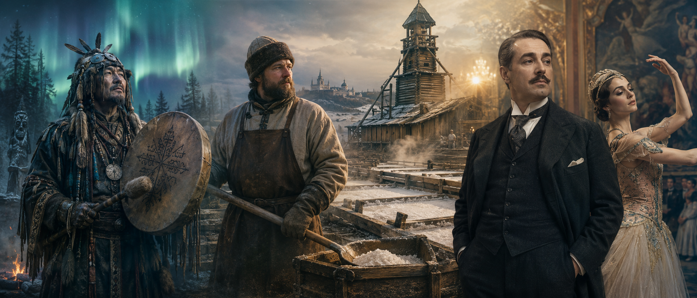
Three words. What is today about?
1. The ⋯ Mountains divide Europe from Asia.
2. The ⋯ river flows through the city of Perm.
3. The ancient tribes of the region were ⋯ peoples.
4. A ⋯ was a spiritual leader who talked to nature spirits.
5. The famous Perm ⋯ style shows bronze bird-men with wings.
6. The Stroganov family became rich from ⋯ mining in Solikamsk.
7. Wooden ⋯ from Perm churches are unique in Russia.
8. The Kungur Ice ⋯ is a natural wonder near Perm.
9. Scientists named a geological ⋯ after the city of Perm.
10. Boris Pasternak turned Perm into the fictional town of ⋯ in "Doctor Zhivago".
Five Things You Didn't Know About Perm
Perm is not on the usual Russian tourist list, but it should be. Here are five reasons why.
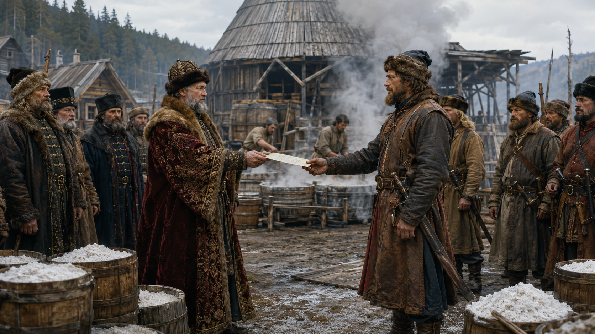
In the sixteenth century, the Stroganov family was the richest merchant family in Russia. They controlled the salt mines around Solikamsk, and salt in those days was as valuable as oil is today.
To the east of their lands, beyond the Ural mountains, there was Siberia — huge, cold, full of fur, but also full of hostile tribes and raiders. The Stroganovs needed protection.
So in 1581 they hired a Cossack ataman called Yermak. They gave him weapons, food, boats, and a written charter — and sent him east with a small army. Yermak crossed the Urals, defeated the Siberian Khanate, and opened Siberia for the Russian Empire.
Without Stroganov salt, there would have been no money for Yermak. Without Yermak, there would have been no Russian Siberia. It all started here, near Perm.
Words are shuffled — say the question in the correct order. Click any word to hear it.
Three modern tourists explain why they came to Perm.
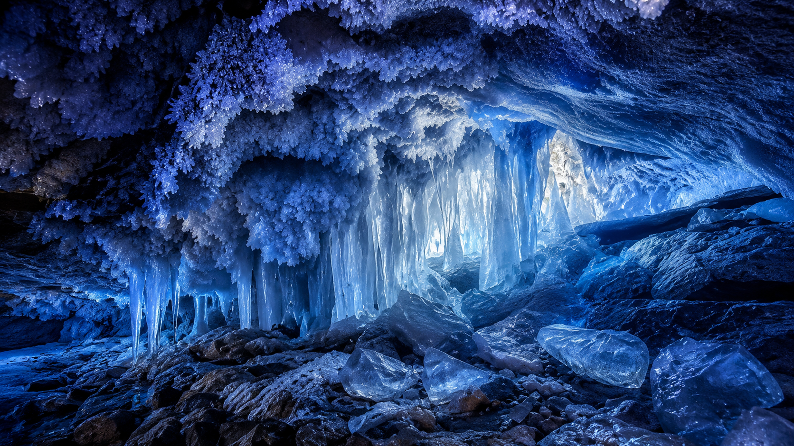
For nature lovers, Perm means the Kungur Ice Cave — 5 kilometres of underground grottoes lit up in blue — and rafting down the wild Chusovaya river in summer.
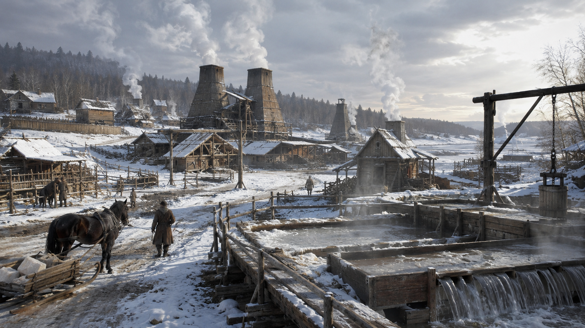
For history fans, Perm means the old Stroganov salt towns of Solikamsk and Cherdyn, and the sombre Perm-36 gulag memorial — the only preserved Soviet camp in Russia.
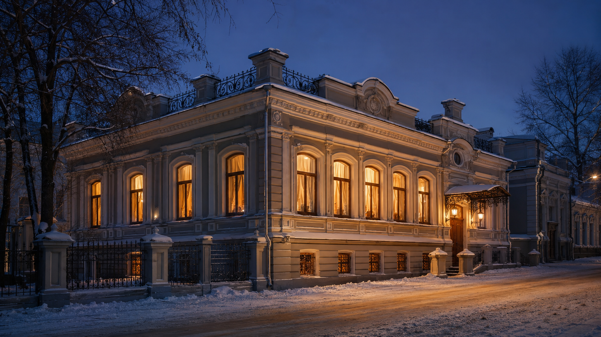
For art lovers, Perm means the Diaghilev Festival every summer, the world-famous Perm Opera and Ballet, and the unique wooden sculpture and animal-style bronze collections.
Click a place name (top), then click the matching drop here next to its description.
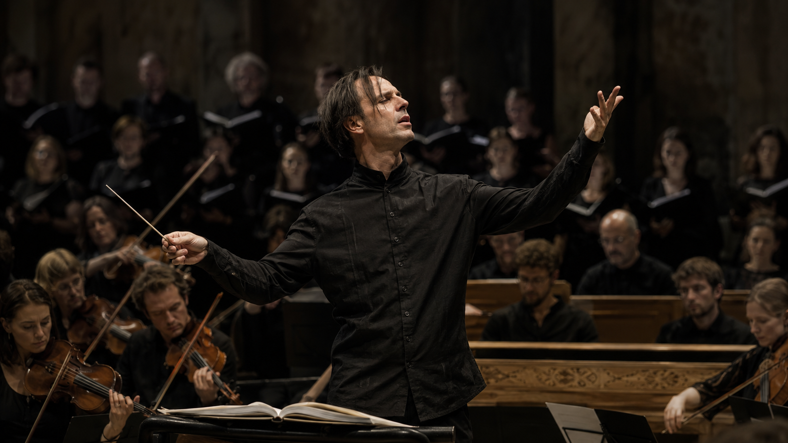
Every summer, Perm hosts the Diaghilev Festival — one of the most important classical-music events in Russia. Ballet stars, opera singers and orchestras from all over the world come to a small city in the Urals for two weeks. For a long time it was led by conductor Teodor Currentzis and his orchestra MusicAeterna, based right here in Perm. Because of the festival, people in Berlin, Paris and Tokyo now know the name «Perm».
| Use | Structure | Example |
|---|---|---|
| Polite wish | I would like + noun / to-verb | I would like to visit the Kungur Ice Cave. |
| Choice of two | Would you rather + verb + or + verb? | Would you rather see Perm-36 or the cave? |
| If… | If + past, would + verb | If I had time, I would visit Solikamsk. |
Kungur Ice Cave — 5 km of underground grottoes lit up in blue. Cold, magical, purely natural. Great for photos.
Perm-36 — a real Soviet labour camp preserved as a memorial. Heavy, silent, historically important. Not «pleasant», but unforgettable.
Pelmeni — small meat dumplings from the Ural region, often eaten with sour cream and vinegar. Filling, cosy, winter food.
Ukha — clear river-fish soup with potatoes, onion and dill. Light, seasonal, best in summer.
Kama embankment — 4 km of open river views, the famous red letters "Счастье не за горами", bicycles, sunsets. Public and free.
Wooden sculpture museum — silent gallery of life-size Christ figures with Komi faces. Intense, dark, deeply Perm.
Winter — deep snow, frozen Kama, the ice cave at its most dramatic. Very cold — often minus 20.
Summer — Kama boat trips, Chusovaya rafting, White Nights, but mosquitoes in the forest.
Modern hotel — nice room, hot shower, ten minutes from the Opera House. Comfortable but ordinary.
Wooden guesthouse in Solikamsk — old Stroganov merchant town, homemade breakfast, but 200 km from Perm.
Local historian — Stroganov era, salt mines, gulag, Civil War. Deep facts, lots of dates.
Young curator — Diaghilev Festival, PERMM contemporary art, street art. Modern, cool, less history.
One day — embankment + wooden sculpture museum + a concert. You catch the highlights, but everything feels rushed.
One whole week — Kungur, Solikamsk, Perm-36, Diaghilev House, a Chusovaya boat trip. You go deeper but need more time and money.
| Modal | Meaning | Example |
|---|---|---|
| must | strong obligation | You must book Perm-36 in advance. |
| mustn't | prohibition | You mustn't touch the wooden sculptures. |
| should | advice | You should take a warm jacket to Kungur. |
| might | possibility | It might snow in May. |
| could | possibility / polite request | We could start at the embankment. |
A Tourist's First Day in Perm · choose the modal:
Short answers using lesson vocabulary.
Repeat the 7 "Would you rather" prompts from section 12 — now spoken aloud. Full sentence + 2 reasons.
Choose 2 prompts and speak for 2-3 minutes on each.
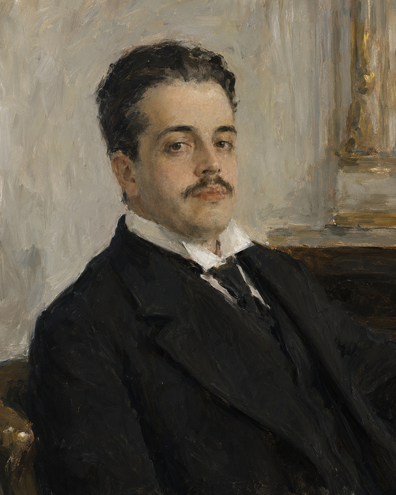
Who: impresario, founder of the Ballets Russes.
Did: brought Russian ballet to Paris in 1909, worked with Nijinsky, Stravinsky, Picasso, Coco Chanel.
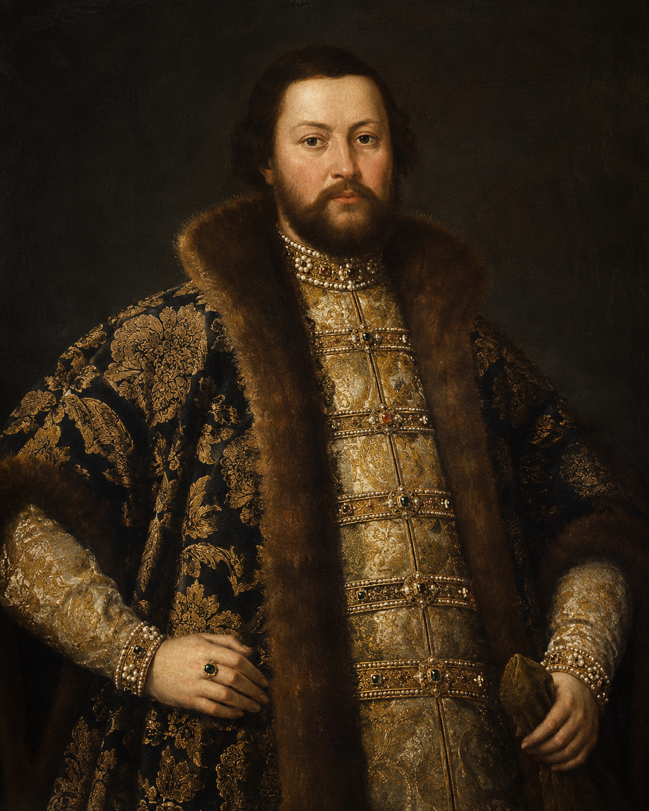
Who: the richest merchant family of the 16th–17th centuries.
Did: controlled the salt mines of Solikamsk, financed Yermak's expedition, opened Siberia for the Russian Empire.
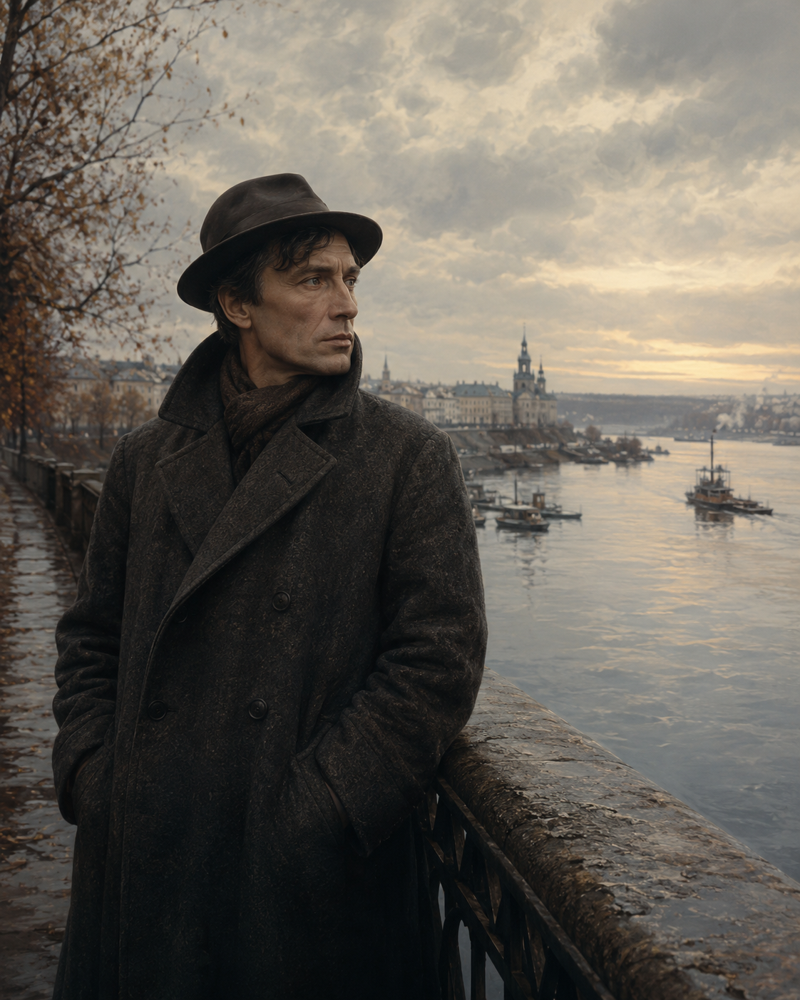
Who: Nobel-Prize-winning poet and novelist.
Did: lived in Perm during the Civil War; disguised it as the fictional town of «Yuryatin» in "Doctor Zhivago".
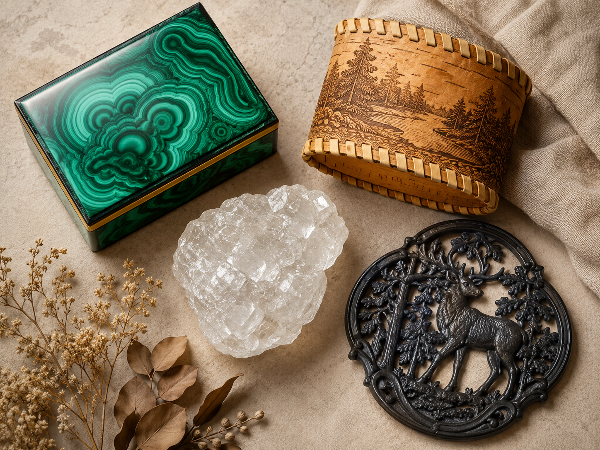
The Ural mountains have been a natural workshop for centuries. Four crafts made the region famous around the world.
Malachite. This green stone with wavy patterns is mined in the Urals. Since the 18th century it has been used for jewellery boxes, table tops and even entire church columns. The Malachite Room in the Winter Palace in Saint Petersburg is built from Ural malachite.
Salt. White salt crystals from Solikamsk built the fortune of the Stroganov merchants — and, indirectly, opened Siberia. Even today, some souvenir shops in Perm sell raw salt crystals in glass jars.
Birch bark. Light, waterproof and beautiful, birch bark has been used by Komi and Russian craftsmen for a thousand years to make bread boxes, small chests and jewellery. Modern designers still use it.
Kasli cast iron. In the town of Kasli, just south of Perm Krai, craftsmen learned to cast delicate lace-like iron figurines in the 19th century. Kasli iron won a gold medal at the World Exhibition in Paris in 1900.
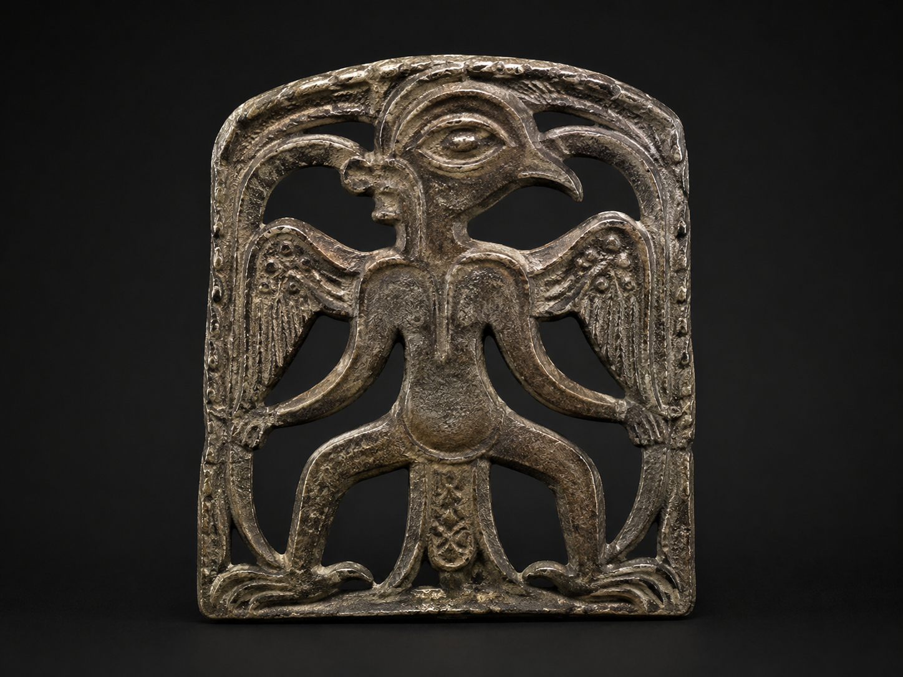
In the last twenty years Perm has quietly become the cultural capital of the Urals. It's still an industrial city on the Kama, but three things have put it on the international map.
First — the Diaghilev Festival. Every June, the Perm Opera House hosts one of the biggest classical-music events in Russia: opera, ballet, symphonic concerts, night marathons.
Second — Teodor Currentzis and his orchestra MusicAeterna, based in Perm for many years. Currentzis's recordings of Mozart and Tchaikovsky won prizes in Europe and America.
Third — a wave of modern museums and street art. The Museum of Contemporary Art PERMM, the giant red letters «Счастье не за горами» on the Kama embankment ("Happiness is not far away"), and Perm Zoo — one of the oldest zoos in Russia.
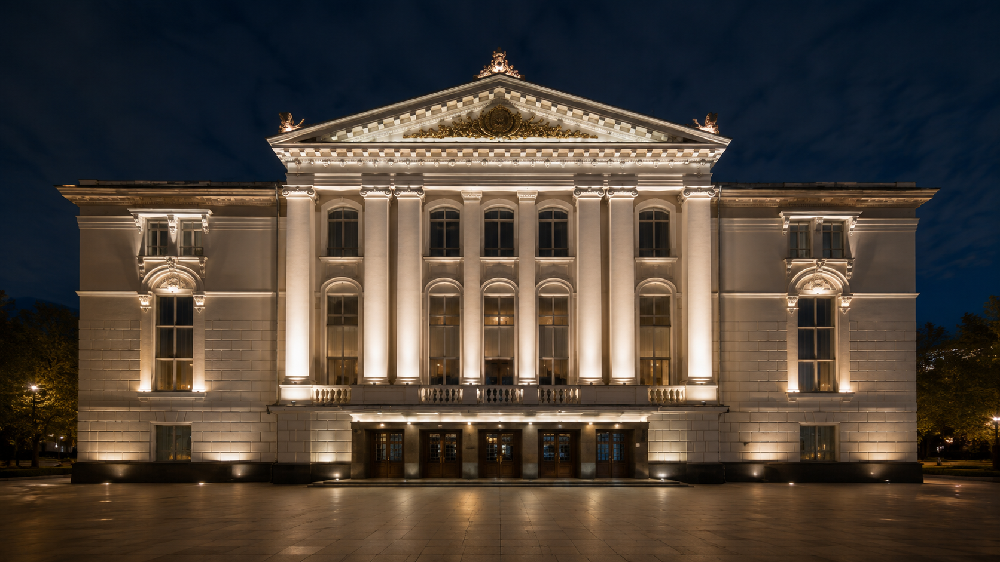
The Perm Opera and Ballet Theatre, one of the oldest in Russia. Home of the annual Diaghilev Festival and the MusicAeterna orchestra.
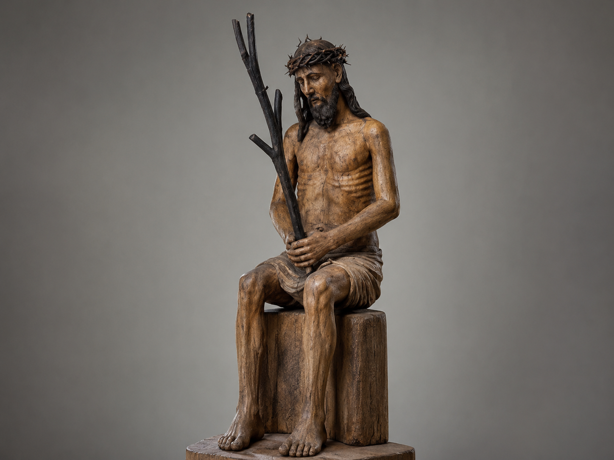
Inside the old Spaso-Preobrazhenskaya Cathedral: dozens of life-size wooden saints with local Komi faces. Nothing like it anywhere else.
The 4-km Kama embankment is Perm's living room. Bicycles, sunset views of the bridge, and the famous red letters "Счастье не за горами".
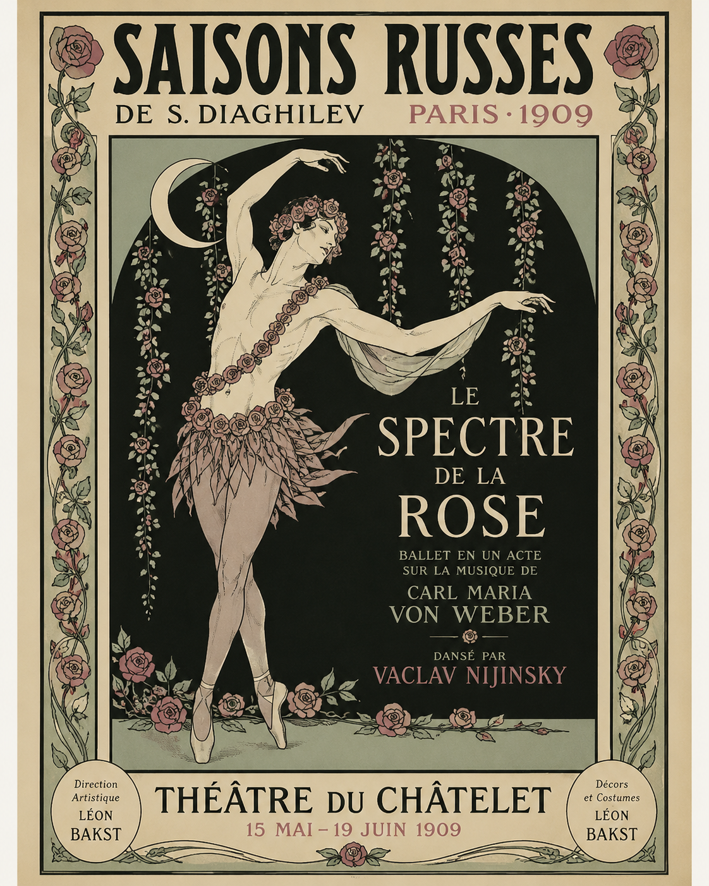
Sergei Diaghilev was born in Novgorod in 1872, but he grew up in Perm, in a large wooden house on Sibirskaya Street. His family loved music. They organised evening concerts, and little Sergei learned piano and singing from a very young age.
He was not a great composer or dancer himself. His talent was different — he saw talent in others, and he knew how to bring artists, musicians and dancers together to make something new.
In 1909, when he was thirty-seven, he brought a Russian ballet company to Paris. He called it "Les Ballets Russes". The first season shocked Europe. Paris had never seen dancers like Vaslav Nijinsky, sets by Léon Bakst, or music by young Igor Stravinsky.
For twenty years, until his death in 1929, Diaghilev's company travelled Europe. He worked with Picasso, Coco Chanel, Matisse and dozens more. He never went back to Russia after the Revolution.
Today the annual Diaghilev Festival in Perm brings the world's best dancers and orchestras home — to the same city where a music-loving boy once played piano in a wooden house.
Vocabulary: impresario — producer of shows · talent — natural ability · company — group of artists · season — series of shows · set / costume — stage design · composer — writer of music · legacy — what you leave behind.